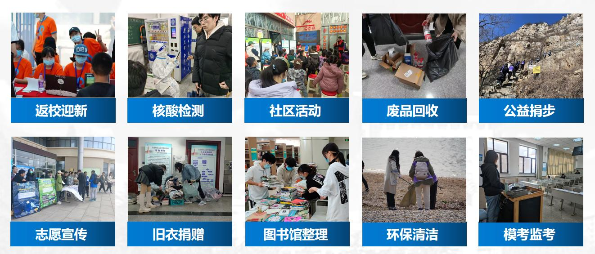

Commitment to Social Responsibility
I am deeply committed to social responsibility and passionate about public welfare. I have actively participated in nearly 100 on- and off-campus volunteer activities, accumulating almost 600 hours of service, which earned me the title of "Outstanding Youth Volunteer" at the university level. My dedication extends to educational support, as I was twice selected for teaching missions in remote areas: Minhe in Qinghai province and Sanjiazi Village in Liaoning. During my holidays, I also joined the "Green Fire Program" to teach middle school students in underprivileged regions, an experience that was widely recognized and affirmed.
Beyond being a volunteer, I took on a leadership role as the President of my college's Youth Volunteer Association. In this position, I planned and launched numerous unique volunteer projects, focused on leading and cultivating a new generation of volunteers to promote the spirit of service. Since I took office, our association has established four new service teams, organized over 100 activities of various scales, and engaged nearly 5,000 student participants.
